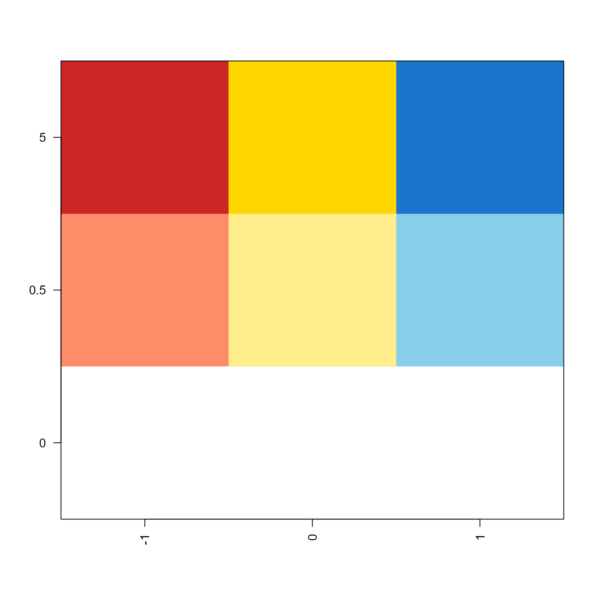
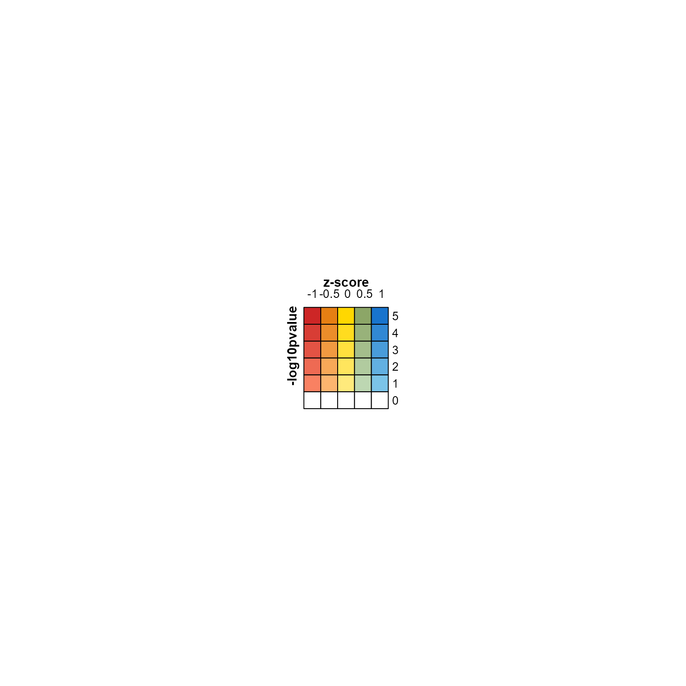

Display colors from bivariate color function
Source:R/jamenrich-bivariatecolor.R
make_legend_bivariate.RdDisplay colors from bivariate color function
make_legend_bivariate(
col_fun,
pretty.n = 5,
name = "bivariate",
xlab = "",
ylab = "",
title = "",
border = TRUE,
digits = 3,
grid_height = grid::unit(5, "mm"),
grid_width = grid_height,
row_breaks = NULL,
column_breaks = NULL,
row_gap = grid::unit(0, "mm"),
column_gap = grid::unit(0, "mm"),
...
)See also
Other jam utility functions:
avg_angles(),
avg_colors_by_list(),
call_fn_ellipsis_deprecated(),
cell_fun_bivariate(),
collapse_mem_clusters(),
colorRamp2D(),
deconcat_df2(),
display_colorRamp2D(),
enrichList2geneHitList(),
find_colname(),
gsubs(),
handle_igraph_param_list(),
isColorBlank(),
make_point_hull(),
mem_find_overlap(),
order_colors(),
rank_mem_clusters(),
rotate_coordinates(),
subgraph_jam(),
xyAngle()
Examples
mcolor <- matrix(ncol=3,
c("seashell", "salmon1", "firebrick3",
"gray99", "lightgoldenrod1", "gold",
"aliceblue", "skyblue", "dodgerblue3"));
row_breaks <- c(0, 0.5, 1);
column_breaks <- c(-1, 0, 1);
rownames(mcolor) <- row_breaks;
colnames(mcolor) <- column_breaks;
jamba::imageByColors(mcolor);

col_fun <- colorRamp2D(column_breaks=column_breaks,
row_breaks=row_breaks,
mcolor=mcolor)
lgds <- make_legend_bivariate(col_fun,
ylab="-log10pvalue",
xlab="z-score",
pretty.n=5);
jamba::nullPlot(doBoxes=FALSE);
ComplexHeatmap::draw(lgds)

lgds <- make_legend_bivariate(col_fun,
ylab="-log10pvalue",
xlab="z-score",
pretty.n=NULL);
jamba::nullPlot(doBoxes=FALSE);
ComplexHeatmap::draw(lgds)
 lgds <- make_legend_bivariate(col_fun,
ylab="-log10pvalue",
xlab="z-score",
column_breaks=c(-1, -0.5, 0, 0.5, 1),
row_breaks=c(0, 0.25, 0.5, 0.75, 1),
column_gap=grid::unit(1, "mm"),
row_gap=grid::unit(1, "mm"),
pretty.n=5);
jamba::nullPlot(doBoxes=FALSE);
ComplexHeatmap::draw(lgds)
lgds <- make_legend_bivariate(col_fun,
ylab="-log10pvalue",
xlab="z-score",
column_breaks=c(-1, -0.5, 0, 0.5, 1),
row_breaks=c(0, 0.25, 0.5, 0.75, 1),
column_gap=grid::unit(1, "mm"),
row_gap=grid::unit(1, "mm"),
pretty.n=5);
jamba::nullPlot(doBoxes=FALSE);
ComplexHeatmap::draw(lgds)